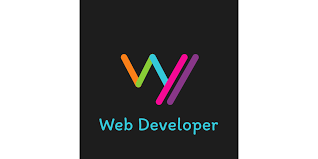

contact
- Ahmad Hammad
- Email: Ahmadkhammad95@gmail.com
- Phone: +962780090128
Career Objective
Recent Computer Science graduate with a focus on Networking, passionate about technical support and web development. Seeking a challenging role in IT to apply my problem-solving skills, deepen my expertise in network management, and contribute to user satisfaction through efficient technical solutions.
Education
- Bachelor of Computer Science – Networking
- Isra University, Amman | Graduated: 2024
Technical Skills
- Networking: CCNA-certified with strong knowledge of protocols, switches, routers, and access points.
- Web Development: Proficient in PHP, SQL, HTML, CSS, JavaScript; basic knowledge of React.
- Operating Systems: Experienced with Windows and Linux environments.
- Additional Skills: IoT systems, database management, and chatbot development.
Professional Experience and Projects
- IoT Internship – Smart Method Company | Remote | July 2020 – September 2020
- Set up local databases to manage control commands.
- Created an Android-compatible web application and a chatbot.
- Academic Projects
- Designed and implemented a university web page.
- Developed a distance education system with a test bank feature.
Certifications and Training
- CCNA Certification – Pioneers Center, Amman
- AWS Solution Architecture – Self-paced training underway
- MERN Full-Stack Development Bootcamp – In progress, focusing on modern web development technologies.
- Completed A+ course by Mike Myers through Udemy.